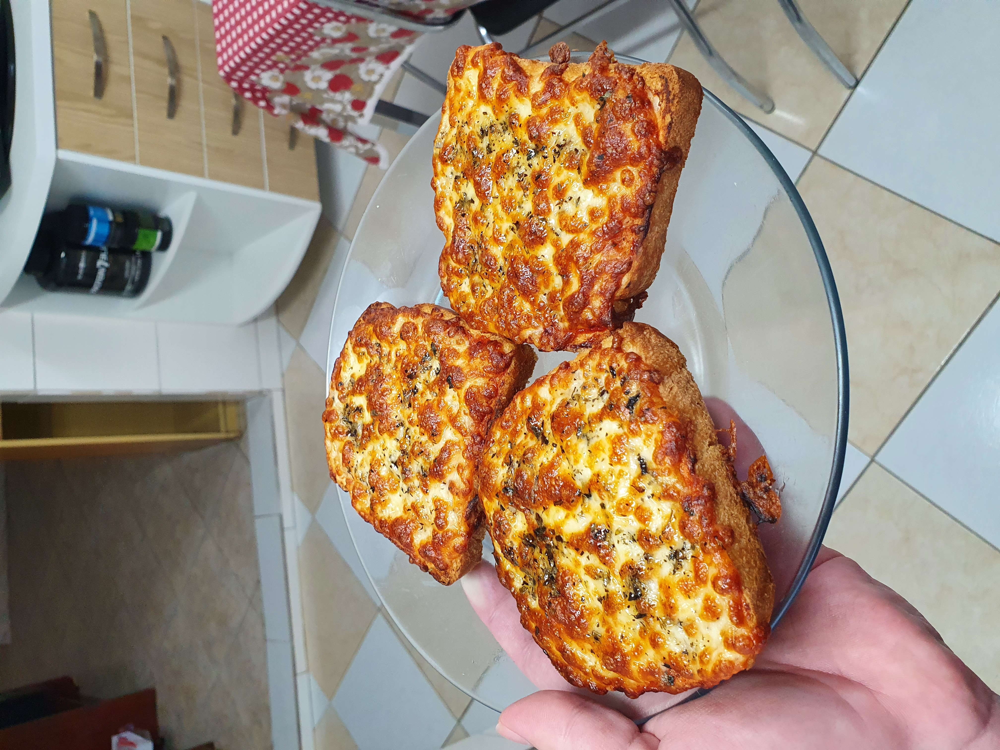

I can't believe it's not pizza!

Ingredients:
- 2-3 slices of white bread
- 1tbsp of ketchup for each slice
- ~1/3 cup of shredded cheese for each slice
- Optional: dried oregano and olive oil
Steps:
- Spread the ketchup evenly on each slice
- Portion and place the cheese evenly on each slice
- Optional: sprinkle the oregano and add a drizzle of olive oil to improve the taste
- Bake on an oven or air fryer for 10-15 minutes on high heat